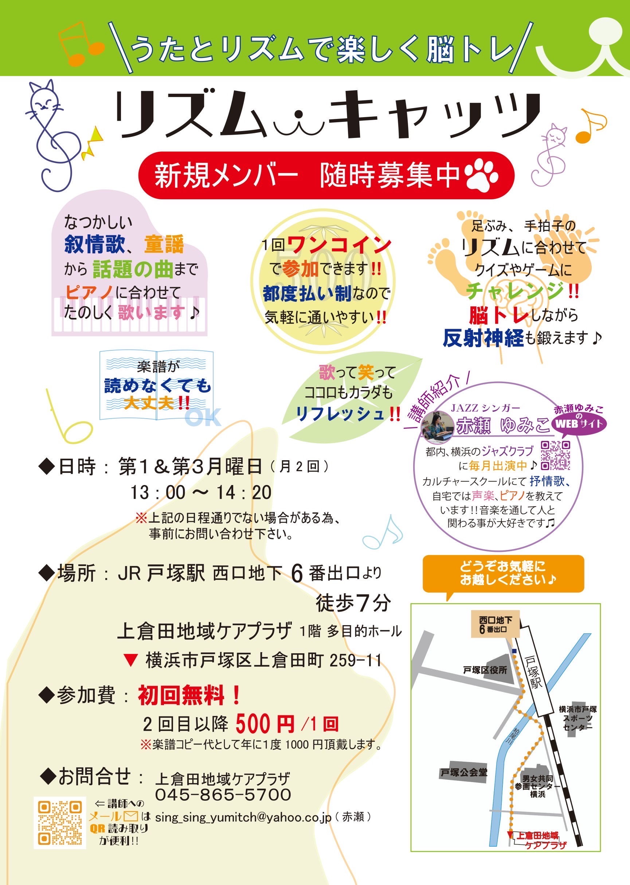
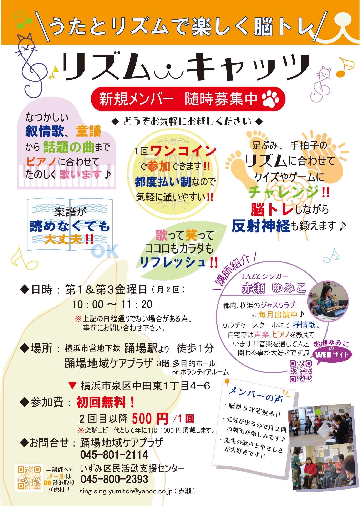

懐かしい抒情歌、愛唱歌、歌曲、童謡からポップス、
今流行りの歌まで織り交ぜて歌っています♪
和気あいあいと楽しいグループレッスンです！
～池袋コミュニティカレッジ～

お問い合わせ 03-5949-5483
クラス名<日本や世界の名曲を歌おう>
第２、第４火曜 14：30～16：00
| 3ヶ月 | ¥25,080（税込） |
| 一般体験 | ¥4,730（税込） |
懐かしい日本の叙情歌、童謡、世界の歌から話題の歌まで、幅広いジャンルの曲を歌います。
毎回腹式呼吸や発声練習から始めます。楽譜が読めなくても大丈夫！思い切り歌ってリフレッシュしましょう。
☆見学、体験レッスン 随時受付中
～セブンカルチャークラブ橋本～
 詳細はこちら
詳細はこちら
お問い合わせ 042-775-5517
クラス名<抒情歌、愛唱歌>
第１、第３木曜 13：00～14：30
月会費 ¥5,874（税込）
体験費 ¥1,210（税込）
☆見学、体験レッスン 随時受付中
≪歌とリズムで音楽・脳トレ≫
歌あそび、リズムステップなど脳トレを兼ねた楽しいレクリエーションがいっぱい！笑いの堪えないグループです！季節ごとの様々な歌も歌います♪
～横浜市上倉田地域ケアプラザ～ 詳細はこちら
利用団体名<リズムキャッツ>
第１、第３月曜13:00〜14:20
※月によって、第２、第４、第５月曜日になることもあります。
活動時間：約80分
参加費 500円／1回（※教材費等別途かかります）
☆無料体験レッスン随時受付中

～横浜市踊場地域ケアプラザ～ 詳細はこちら
利用団体名<リズムキャッツ>
第１、第３金曜 10：00～11：20
(※月によって第２、第４、第５金曜になることもあります。)
参加費 ¥500円／1回（※教材費等別途かかります）
☆無料体験レッスン随時受付中


ボイストレーニングから音符の読み方、ソルフェージュなどもレベルに合わせて指導します。 マイペースに好きな曲をじっくりと歌えます♪
受講料 1 レッスン 5,000円～（1時間）
☆体験レッスン随時受付中
お問い合わせ
ムジカ♪ドルチェ戸塚教室
（東汲沢小学校近く）
メール sing_sing_yumitch@yahoo.co.jp